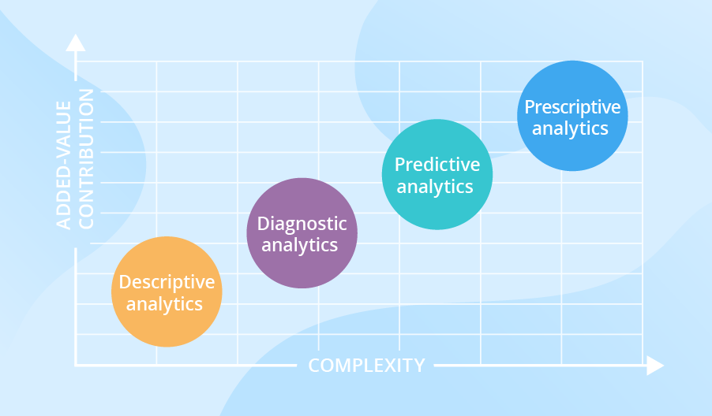

Data Science toolbox
2024-02-11
Chapter 1 About this book
这本书是一本工具书, 里面总结了使用R进行数据科学相关工作常用的一些工具.
1.1 DDPP
有4种不同类型的分析。在这里，我们从最简单的类型开始，进一步讨论更复杂的类型。事实上，分析越复杂，它带来的价值就越大。

1.1.1 Descriptive analytics
描述性分析回答了发生了什么的问题。描述性分析从多个数据来源处理原始数据，以提供对过去的有价值的见解。然而，这些发现只是表明有些事情是错误的或正确的，没有解释原因。
看数据的分布 + 数据间的关系
分布告诉了我们数据的范围以及数据的集中程度
数据的关系告诉了我们 数据之间是否存在某种联系
描述性分析（Descriptive Analytics）是数据分析的一种基础阶段，主要关注对现有数据的总结和解释，以揭示数据的关键特征和模式。这一阶段的目标是提供对数据的清晰和简洁的概括，帮助人们更好地理解数据集的基本性质。描述性分析主要包括以下几个方面：
数据总结： 描述性分析的一个主要任务是对数据进行总结，包括计算中心趋势（如均值、中位数）和离散度（如标准差、范围）。这有助于了解数据的分布和集中趋势。
数据可视化： 利用图表、图形和统计图等可视化工具，描述性分析帮助呈现数据的形状、分布和关系。常见的可视化方式包括直方图、散点图、箱线图等。
频率分布： 描述性分析通过频率分布表或直方图显示数据中各个值的出现频率。这有助于理解数据的分布情况，识别可能的模式或异常。
关键趋势和模式： 描述性分析帮助识别数据中的关键趋势和模式，例如时间序列中的季节性变化、数据集中的集群或分组等。
统计指标： 描述性分析还可以提供关键的统计指标，如百分比、累积百分比、频率等，以更全面地了解数据的性质。
数据摘要： 描述性分析通过提供数据摘要或摘要统计信息，如总和、平均值、中位数等，为决策者提供了对数据集中关键属性的整体了解。
异常检测： 描述性分析有助于识别可能的异常或离群值，这些异常可能需要进一步的调查和解释。
总体而言，描述性分析为数据科学和业务决策提供了起点，为进一步的分析提供了基础。这种分析有助于回答“发生了什么”、“为什么发生了”等问题，为组织提供对当前状况的深入理解。
1.1.2 Diagnostic analytics
诊断性分析（Diagnostic Analytics）是数据分析的一种阶段，旨在理解过去事件的发生原因，揭示事物发展的关键驱动因素，以及为什么某些结果发生。这种分析有助于识别业务绩效的关键趋势和模式，为组织提供更深刻的洞察，帮助解释已经发生的事件。
主要特征和目标包括：
原因分析： 诊断性分析的主要目标之一是找出为什么过去的事件发生了。通过深入挖掘数据，识别导致特定结果的关键因素。
趋势识别： 通过时间趋势和模式分析，诊断性分析帮助识别业务绩效的演变。这有助于理解业务活动对结果的影响。
关键驱动因素： 通过分析相关变量之间的关系，诊断性分析有助于确定对业务结果产生最大影响的关键驱动因素。这可以为组织提供重要的业务洞察。
异常检测： 诊断性分析有助于识别数据中的异常或离群值，这可能是影响业务绩效的重要因素。通过识别异常，组织可以更好地理解为什么某些结果偏离了预期。
业务洞察提供： 通过深入的诊断性分析，组织能够制定更具洞察力的业务策略，基于对业务运作和过去绩效的深刻理解。
反馈和改进： 诊断性分析结果可以为业务提供反馈，并为未来的决策和改进提供指导。通过识别过去事件的关键因素，组织能够调整战略以更好地实现目标。
诊断性分析通常是数据分析过程中的一个关键步骤，它为组织提供了对过去业务绩效的深刻理解，为未来决策提供了有力的指导。